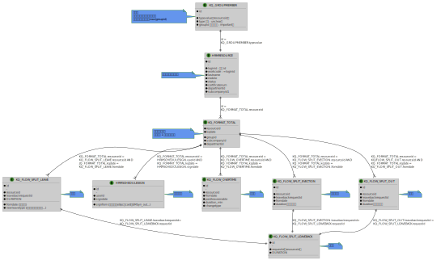

泛微OA 计算员工每月应出勤天数
2023-06-12
2 min read
泛微OA，计算员工每月应出勤天数， oracle 数据库
基本需求
计算员工每月应出勤天数，分 A、B 2 种算法，考虑假期表；
A 地出勤, 统计每周 1-5 汇总天数 - 当月国家法定假日天数
B 地出勤, 统计每周 1-6 汇总天数 - 当月国家法定假日天数
oracle 日期基本处理
TO_CHAR(date_value, 'D') -- 转星期数 2023-06-05 -> 1-7 数字
(select TRUNC(TO_DATE('2023', 'YYYY'), 'YYYY') + LEVEL - 1 AS date_value
FROM dual CONNECT BY LEVEL <= 365) calendar -- 生成 2023 全年的日历记录
TO_DATE(ho.holidaydate,'yyyy-mm-dd') -- 字符串转日期
EXTRACT(YEAR FROM date_value) -- 获取日期年份 2023-06-05 -> 2023
EXTRACT(MONTH FROM date_value) -- 获取日期月份 2023-06-05 -> 6
LPAD(EXTRACT(MONTH FROM calendar.date_value), 2, '0') -- 获取日期月份(补零) 2023-06-05 -> 06
SUBSTR(qj.fromdate,-10, 7) -- 从日期字符串获取月字符串 2023-06-05 -> 2023-06
附件泛微考勤表 E-R 图

oracle 结合泛微 OA 实现考勤统计
计算方法
假期类型，1 节假日当天、3 节假日假期、2 节假日补调上班日期
根据算法的不同来确认：
| 星期 | type | D | 五天制 | 六天制(周六) |
| 周一 | null | 1 | 0 | 0 |
| 周二 | null | 2 | 0 | 0 |
| 周三 | null | 3 | 0 | 0 |
| 周四 | 3 | 4 | -1 | -1 |
| 周五 | 3 | 5 | -1 | -1 |
| 周六 | 1 | 6 | 0 | -1 |
| 周天 | 2 | 7 | +1 | +1 |
| 汇总 | 5-2+1=4 | 6-3+1=4 |
总结：使用不同的计算策略（五天班、六天班）计算公式如下
$$\mbox{应出勤天数} = \mbox{基础出勤天数} - \mbox{出勤天内假期} + \mbox{出勤天外工作日}$$
sql 实现
实现了包括工作日+考勤组节假日的应出勤天数
大致思路，首先生成日历表，再关联假期表，分别统计出基础出勤天数、出勤天内假期、出勤天外工作日
select calendar.fmonth,
ho.groupid,
fmonthday5 - NVL(subday5,0) + NVL(addday5,0) as fmonthday5,
fmonthday6 - NVL(subday6,0) + NVL(addday6,0) as fmonthday6
FROM
(SELECT EXTRACT(YEAR FROM calendar.date_value) || '-'
|| LPAD(EXTRACT(MONTH FROM calendar.date_value), 2, '0') fmonth,
SUM(CASE WHEN TO_CHAR(date_value, 'D') < 6 THEN 1 ELSE 0 END) fmonthday5,
SUM(CASE WHEN TO_CHAR(date_value, 'D') < 7 THEN 1 ELSE 0 END) fmonthday6
FROM
(select TRUNC(TO_DATE('2023', 'YYYY'), 'YYYY') + LEVEL - 1 AS date_value
FROM dual CONNECT BY LEVEL <= 365) calendar
GROUP BY EXTRACT(YEAR FROM date_value) , EXTRACT(MONTH FROM date_value)
) calendar
LEFT JOIN
(select ho.groupid,
EXTRACT(YEAR FROM TO_DATE(ho.holidaydate,'yyyy-mm-dd')) || '-'
|| LPAD(EXTRACT(MONTH FROM TO_DATE(ho.holidaydate,'yyyy-mm-dd')), 2, '0') fmonth,
SUM(CASE WHEN TO_CHAR(TO_DATE(ho.holidaydate,'yyyy-mm-dd'), 'D') < 6 AND ho.changetype in(1,3) THEN 1 ELSE 0 END) subday5,
SUM(CASE WHEN TO_CHAR(TO_DATE(ho.holidaydate,'yyyy-mm-dd'), 'D') > 5 AND ho.changetype=2 THEN 1 ELSE 0 END) addday5,
SUM(CASE WHEN TO_CHAR(TO_DATE(ho.holidaydate,'yyyy-mm-dd'), 'D') < 7 AND ho.changetype in(1,3) THEN 1 ELSE 0 END) subday6,
SUM(CASE WHEN TO_CHAR(TO_DATE(ho.holidaydate,'yyyy-mm-dd'), 'D') > 6 AND ho.changetype=2 THEN 1 ELSE 0 END) addday6
FROM KQ_HOLIDAYSET ho
GROUP BY ho.groupid,
EXTRACT(YEAR FROM TO_DATE(ho.holidaydate,'yyyy-mm-dd')),
EXTRACT(MONTH FROM TO_DATE(ho.holidaydate,'yyyy-mm-dd'))
) ho -- 假期月汇总表, 当月有节假日
ON calendar.fmonth = ho.fmonth and ho.groupid is null;
( SELECT EXTRACT(YEAR FROM calendar.date_value) || '-'
|| LPAD(EXTRACT(MONTH FROM calendar.date_value), 2, '0') fnomalmonth,
SUM(CASE WHEN TO_CHAR(date_value, 'D') < 6 THEN 1 ELSE 0 END) fmonthnomalday5,
SUM(CASE WHEN TO_CHAR(date_value, 'D') < 7 THEN 1 ELSE 0 END) fmonthnomalday6
FROM
(select TRUNC(TO_DATE('2023', 'YYYY'), 'YYYY') + LEVEL - 1 AS date_value
FROM dual CONNECT BY LEVEL <= 365) calendar
GROUP BY EXTRACT(YEAR FROM date_value) , EXTRACT(MONTH FROM date_value)
) normalworkday; -- 正常工作日表，当月无节假日